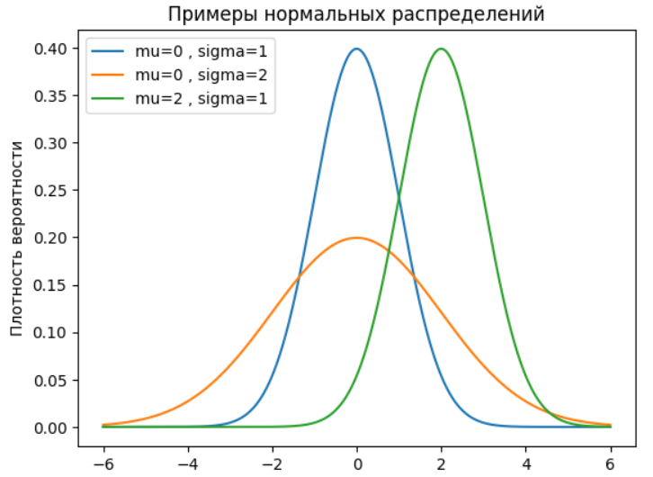
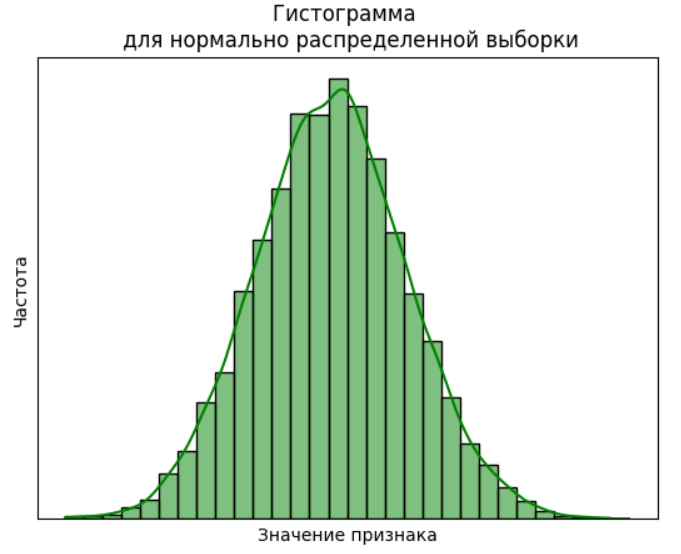
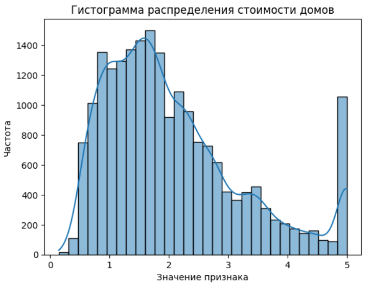
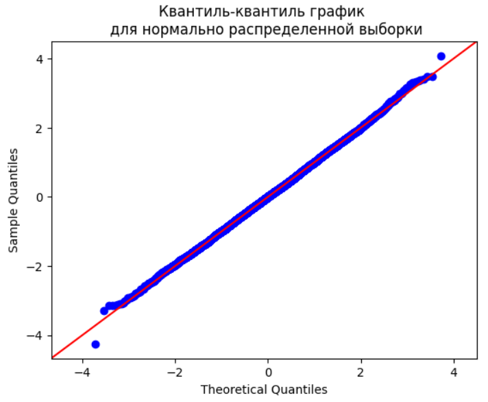
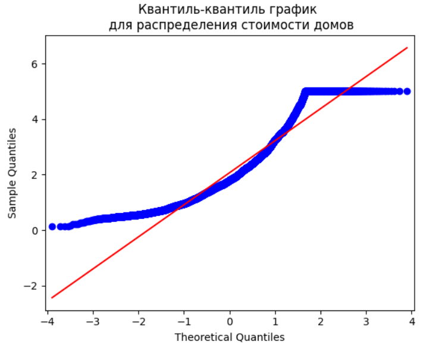

В предыдущем юните мы говорили, что для выбора между параметрическими и непараметрическими тестами необходимо проверить распределение признаков на нормальность. Сейчас мы узнаем, что такое нормальное распределение, почему оно так важно для нас и как проверить, подчиняется ли распределение данных нормальному закону.
Начиная с этого раздела, мы будем практиковаться на Python. Для этого нам понадобятся две новых библиотеки:
- SciPy — библиотека для научных и инженерных расчётов.
- Statsmodels — библиотека для статистических исследований.
Установить эти библиотеки можно с помощью стандартной команды:
! pip install scipy ! pip install statsmodels
НОРМАЛЬНОЕ РАСПРЕДЕЛЕНИЕ
Многие процессы в природе следуют нормальному закону распределения: рост человека, вес при рождении, артериальное давление, размер ноги и др.
На курсе вы уже сталкивались с понятием нормального распределения и некоторыми теоремами и правилами, основанными на особенностях нормального распределения. В частности в модуле «Очистка данных» мы изучали метод z-отклонений (трёх сигм) и метод Тьюки для поиска выбросов — они работают только для нормально распределённых данных.
Нормальное распределение (распределение Гаусса) характеризуется двумя числами:
- средним значением \(\mu\) (mu);
- стандартным отклонением \(\sigma\) (sigma).
Примеры нормальных распределений с разными \(\mu\) и \(\sigma\):

Как вы можете видеть, вне зависимости от значений параметра среднего и стандартного отклонения нормальное распределение визуально напоминает колокол (или шляпу).
Любое нормальное распределение обладает следующими свойствами:
- Один пик в центре и симметричные боковые стороны (одномодальное распределение).
- Среднее и медиана равны и расположены в центре распределения.
- Отклонение значений от среднего подчиняется правилу трёх сигм:
- 68 % значений находятся в пределах одного стандартного отклонения от среднего;
- 95 % значений — в пределах двух стандартных отклонений;
- 99.7% значений — в пределах трёх стандартных отклонений.
ГРАФИЧЕСКИЕ МЕТОДЫ ПРОВЕРКИ НА НОРМАЛЬНОСТЬ
Гистограмма
Если гистограмма имеет вид колокола, то мы считаем, что данные в выборке распределены нормально:

Напомним, что в Python гистограмму можно построить с помощью функции histplot() пакета seaborn. Параметр kde=True добавляет к гистограмме график оценки плотности ядра.
Рассмотрим эту функцию на примере датасета California Housing, входящего в состав sklearn. Построим гистограмму распределения целевого признака — стоимости домов:
# импортируем библиотеки import pandas as pd from sklearn import datasets from matplotlib import pyplot as plt import seaborn as sns # загружаем данные dataset = datasets.fetch_california_housing() data = dataset.target # задаём параметры гистограммы ax = sns.histplot(data, bins=30, kde=True) ax.set(xlabel='Значение признака', ylabel='Частота') plt.title('Гистограмма распределения стоимости домов') # отображаем гистограмму plt.show()

Форма гистограммы несимметрична, с двумя пиками. Отсюда делаем промежуточный вывод: распределение стоимости домов не является нормальным.
Квантиль-квантиль график
Квантиль-квантиль график (Q-Q Plot) визуализирует, насколько распределение выборки близко к нормальному. График показывает взаимное расположение квантилей наблюдаемого и теоретического нормального распределения. Хороший гайд по Q-Q Plots.
Если все точки лежат вдоль диагонали, то мы считаем, что данные в выборке распределены нормально:

В Python квантиль-квантиль график можно построить с помощью функции qqplot() пакета statsmodels. Построение квантиль-квантиль графика мы также рассмотрим на примере стоимости домов из датасета California Housing:
import numpy as np import statsmodels.api as sm from sklearn import datasets from matplotlib import pyplot as plt # загружаем данные dataset = datasets.fetch_california_housing() data = dataset.target # задаём параметры квантиль-квантиль графика sm.qqplot(data, line='s') plt.title('Квантиль-квантиль график \n для распределения стоимости домов') # отображаем квантиль-квантиль график plt.show()

Точки не располагаются на диагонали — распределение стоимости домов не является нормальным (как мы видели и по гистограмме).
Графические методы могут быть неудобны в граничных случаях, когда сложно визуально определить, нормально ли распределение. Например, распределение может быть симметричным и похожим на колокол, но не соответствовать другим признакам нормального распределения. Также гистограмма и Q-Q Plot неинформативны на маленьких выборках.
В таких случаях на помощь приходят специальные статистические тесты.
СТАТИСТИЧЕСКИЕ МЕТОДЫ ПРОВЕРКИ НА НОРМАЛЬНОСТЬ
Существует несколько статистических методов, которые позволяют получить количественную оценку для проверки на нормальность. Мы рассмотрим наиболее часто встречающийся метод — тест Шапиро — Уилка.
Тест Шапиро — Уилка оценивает выборку данных и определяет, насколько вероятно, что данные были получены из нормального распределения.
Тест хорошо работает на выборках до 5000 объектов.
Гипотезы в основе теста:
- Нулевая: данные распределены нормально.
- Альтернативная: данные не распределены нормально.
Детали расчёта p-value в тесте Шапиро — Уилка.
Если p-value теста больше уровня значимости \(\alpha\), то мы считаем, что данные распределены нормально.
ПРИМЕР ИСПОЛЬЗОВАНИЯ ТЕСТА НА PYTHON
В Python тест Шапиро — Уилка реализован в функции shapiro() пакета scipy. Эта функция принимает на вход выборочные данные, а выдаёт p-значение и дополнительный параметр — статистику теста.
Примечание. Статистика теста не будет нас интересовать, так как её интерпретация, в отличие от p-value, зависит от конкретного типа теста. Поэтому для проведения статистических тестов здесь и далее мы будем ориентироваться только на значение p-value.
Рассмотрим пример использования этой функции.
Допустим, нам необходимо проверить, нормально ли распределение количества заказов в день в некотором интернет-магазине. Чтобы правильно выбрать тест, количество заказов нужно проверить на нормальность:
import scipy.stats as stats # задаём уровень значимости alpha = 0.05 # загружаем данные data = [31, 38, 30, 58, 40, 36, 38, 44, 43, 39, 36, 41, 37, 20, 38, 35, 38, 11, 42, 34] # проводим тест Шапиро — Уилка _, p = stats.shapiro(data) print('p-value = %.3f' % (p)) # интерпретируем результат if p <= alpha: print('Распределение не нормальное') else: print('Распределение нормальное') # p-value = 0.015 # Распределение не нормальное
Мы рассмотрели графические и статистические методы проверки на нормальность. Их можно использовать как вместе, так и по отдельности.
Тест Шапиро — Уилка — не единственный метод проверки на нормальность. Существуют и другие, например, тест Д’Агостино или тест Колмогорова — Смирнова. У всех этих методов разные принципы работы, но очень похожие результаты, поэтому в большинстве случаев мож